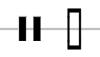

Clefs define the pitch range, or tessitura, of the staff on which it is placed. A clef is usually the leftmost symbol on a staff. Additional clefs may appear in the middle of a staff to indicate a change in register for instruments with a wide range. In early music, clefs could be placed on any of several lines on a staff.
| G clef (Treble Clef) The centre of the spiral defines the line or space upon which it rests as the pitch G above middle C, or approximately 392 Hz. Positioned here, it assigns G above middle C to the second line from the bottom of the staff, and is referred to as the "treble clef." This is the most commonly encountered clef in modern notation, and is used for most modern vocal music. Middle-C is the 1st ledger line below the stave here. The shape of the clef comes from a stylised upper-case-G. |
|
| C clef (Alto Clef and Tenor
Clef) This clef points to the line (or space, rarely) representing middle C, or approximately 262 Hz. Positioned here, it makes the center line on the staff middle C, and is referred to as the "alto clef." This clef is used in modern notation for the viola. While all clefs can be placed anywhere on the staff to indicate various tessitura, the C clef is most often considered a "movable" clef: it is frequently seen pointing instead to the fourth line and called a "tenor clef". This clef is used very often in music written for bassoon, cello, and trombone; it replaces the bass clef when the number of ledger lines above the bass staff hinders easy reading. Both the alto and tenor clefs are used in traditional choral scores. |
|
| F clef (Bass Clef) The line or space between the dots in this clef denotes F below middle C, or approximately 175 Hz. Positioned here, it makes the second line from the top of the staff F below middle C, and is called a "bass clef." This clef appears nearly as often as the treble clef, especially in choral music, where it represents the bass and baritone voices. Middle C is the 1st ledger line above the stave here. The shape of the clef comes from a stylised upper-case-F (which used to be written the reverse of the modern F) |
|
 |
Neutral clef Used for pitchless instruments, such as some of those used for percussion. Each line can represent a specific percussion instrument within a set, such as in a drum set. Two different styles of neutral clefs are pictured here. It may also be drawn with a separate single-line staff for each untuned percussion instrument. |
| Octave Clef Treble and bass clefs can also be modified by octave numbers. An eight or fifteen above a clef raises the intended pitch range by one or two octaves respectively. Similarly, an eight or fifteen below a clef lowers the pitch range by one or two octaves respectively. A treble clef with an eight below is the most commonly used, often used instead of a C clef for tenor lines in choral scores. |
Tablature
For guitars and other plucked instruments it is possible
to notate tablature in place of ordinary notes. In this case, a TAB-sign is
often written instead of a clef. The number of lines of the staff is not
necessarily five: one line is used for each string of the instrument (so, for
standard 6-stringed guitars, six lines would be used). Numbers on the lines show
on which fret the string should be played. This Tab-sign, like the Percussion
clef, is not a clef in the true sense, but rather a symbol employed instead of a
clef. The interstitial spaces on a tablature are never used.